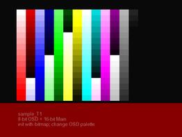
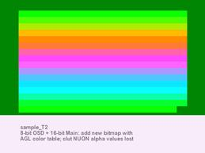
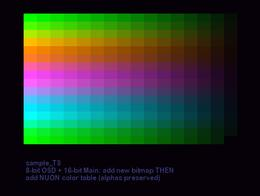
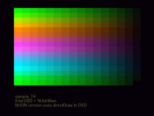
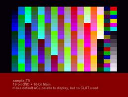
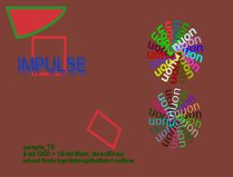
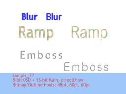
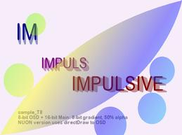
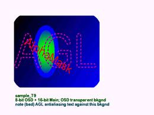

VM Labs SDK Sample Code |
\vmlabs\sample\Impulse\Demo1 |
|
Copyright © 2000-2001 VM Labs, Inc. All Rights Reserved |
April 12, 2001 |
This program demonstrates the basic features of AGL. AGL is a set of C++ classes for 2D text and graphics output.
| Filename | Description |
|
sample.cpp sample.h |
Main C++ program code for sample. |
| sampleTestData.cpp | Contains the specifications for each test (background colors, palettes, drawing functions, etc.) |
| sampleFunctions.cpp | Contains all of the drawing functions for creating the images. |
|
palettes.cpp palletts.h |
Functions for building different test palettes. |
| aglHelloWorld.cpp | A drawing function provided by AlphaMask (from their website). |
| makefile | MAKEFILE for building and running sample program. |
The sample code contains 9 tests, which are intended to illustrate how to do various drawing functions, as well as how NOT to do a few things. For example, Test Setup 2 and Test Setup 3 in sampleTestData.cpp are very similar, but the sequence of actions used to create the bitmap and color table for Test Setup 2 loses the NUON alpha (translucency) info in the palette. Users should compare the functions used to create these two tests to understand the difference.
Some of the tests use a directDraw method (not to be confused with the popular Microsoft API) to render directly to the frame buffer. When these tests are displayed on the NUON system, the viewer can see the image being constructed one element at a time.
Below are the bitmaps from the 9 tests. Click the A button on the joystick to start the slideshow on your NUON system.
  
  
  
Please be aware that that the general structure of the AGL sample programs is significantly different from other NUON sample programs. This is because of the way the AGL C++ class library encapsulates much of the basic system initialization.